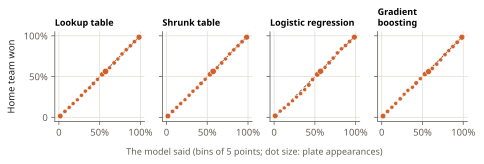
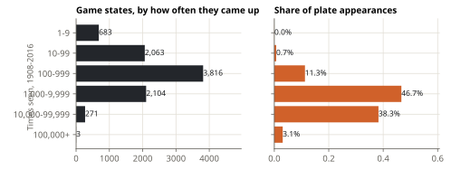

Lab note 2 of 6 · What are the odds?
Step 1: just count
The plainest possible model: for each state, the share of games the home team won from it. Home team down a run in the bottom of the 9th, nobody on, nobody out? Find every time it happened and count. No formula, no assumptions. This is the lookup table, and it is the model every other step has to beat.
How to score a forecast
A forecast of "70%" is neither right nor wrong on a single game. It is right if, over all the times it says 70%, the team wins about 70% of the time, and useful if it says 95% or 5% when it can. Two scores measure this, both lower-is-better.
Log loss is the average surprise. If the model gave the winner a chance p, the surprise is -log(p): 0.105 for a 90% favourite that won, 2.303 for a 10% long shot that won. A model that always says 50% scores log 2 = 0.693. Log loss punishes confident mistakes hard: a forecast of 0% for something that happens costs infinity. That is why no model here may go below 0.1% or above 99.9%.
Brier score is the average squared distance between the forecast and what happened (1 for a win, 0 for a loss). Always saying 50% scores 0.25. It is gentler on long shots and easier to read, so we report both.
The honest test
A model must be scored on games it has not seen, or it will look better than it is: the table "predicts" its own games perfectly in the rare states, because it memorised them.
The usual fix is to set aside a random sample of games. We don't, for two reasons. The plate appearances of one game share an ending, so splitting a season's games at random still leaks. And what we care about is the future: how a model fitted on the past does on seasons that come after it, including rule changes it could not know about.
So the split is by time. Every model is fitted on 1908-2016 and scored on 2017-2025: 20,056 games and 1,523,556 plate appearances. The settings of each model were picked on 2013-2016 with the models fitted on 1908-2012, before the test seasons were looked at. Intervals come from a bootstrap by game: resample the test games with replacement a thousand times and see how much the score moves.
Result
| Model | Log loss | Brier |
|---|---|---|
| The home team's share only (one number) | 0.6925 | 0.2497 |
| Lookup table | 0.4671 | 0.1569 |
Knowing the state cuts the average surprise by 33%. The table's log loss has a 95% interval of 0.4628 to 0.4718 from the bootstrap: that is the width of luck in nine seasons of games, worth keeping in mind when the next steps differ by less.

The table is also well calibrated: when it says 30%, the home team wins about 30% of the time. Each dot is a group of forecasts within 5 points of each other; on the dashed line, the forecasts came true exactly as often as they said.
Where the table breaks

The trouble is the long tail. Most plate appearances happen in a few hundred common states, which have tens of thousands of games behind them. But thousands of states came up fewer than a hundred times. A state seen four times, with four home wins, makes the table say 100% (clipped to 99.9%). Seen in a test season, one loss from such a state costs as much as a few hundred ordinary plate appearances.
On the 0.8% of test plate appearances in states seen fewer than 100 times in training, the table's log loss is 0.1526. The next step is about those.
Next: Step 2: borrow strength.